일반기계기사 (2004-09-05 기출문제)
1과목: 재료역학
1. 지름 9㎝인 원형단면을 직사각형 단면 b×h로 잘라내어 최대강도를 갖도록 할 때 단면치수 b와 h는 몇 ㎝인가?
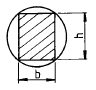
- b=√36 , h=√64
- b=√27 , h=√54
- b=√42 , h=√42
- b=√25 , h=√60
(정답률: 31%)

2. 비틀림 모멘트 T, 극관성 모멘트를 IP, 축의 길이를 L, 전단탄성계수를 G 라 할 때, 단위 길이당 비틀림각은?
- TG/IP
- T/GIP
- L2/IP
- T/IP
(정답률: 57%)
3. 최대 굽힘모멘트 8 kN∙m 를 받는 원형단면의 굽힘응력을 60 MPa로 하려면 지름을 약 몇 cm로 해야 하는가?
- 1.11
- 11.1
- 3.01
- 30.1
(정답률: 35%)
4. 다음 그림의 등분포 하중의 단순지지보에서 A의 보가 B의 보 보다 최대처짐이 몇 배나 되는가?
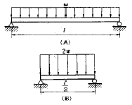
- 4
- 8
- 12
- 16
(정답률: 31%)
5. 내부 반지름 Ri, 외부 반지름 Ro의 속이 빈 원형 단면의 극(polar)관성 모멘트로 맞는 것은?
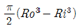
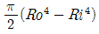
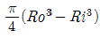
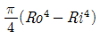
(정답률: 23%)
6. 그림과 같은 축지름 50㎜의 축에 고정된 풀리에 1750rpm, 7.35 kW의 모터를 벨트로 연결하여 전동하려고 한다. 키에 발생하는 전단응력(τ)과 압축응력(σ)은 몇 MPa인가? (단, 키의 치수는(8x4x60)㎜ 이다.)
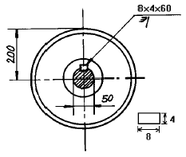
- τ= 3.34, σ= 6.68
- τ= 3.34, σ= 13.37
- τ= 4.34, σ= 13.37
- τ= 4.34, σ= 23.37
(정답률: 21%)
7. 다음 중 피로한도와 가장 관계가 깊은 하중은?
- 충격하중
- 정하중
- 반복하중
- 수직하중
(정답률: 50%)
8. 균일 단면을 가지는 수직 강봉 하단에 하중 P가 작용하고 있다. 이 때 봉의 전신장량은 얼마인가? (단, 강봉의 단면적은 A, 길이는 L, 비중량은  , 그리고 탄성계수는 E이다.)
, 그리고 탄성계수는 E이다.)
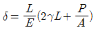
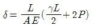
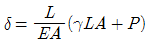
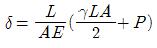
(정답률: 15%)
9. 길이 1.5m 단면적 10cm2의 강재봉을 50 kN의 힘으로 인장 했을때 0.36㎜ 늘어났다. 이 강재의 탄성계수 E는 몇 GPa 인가?
- 31
- 81
- 1⑤
- 208
(정답률: 44%)
10. 두께가 t인 원통형 탱크를 만들어 내압 P가 가해졌을 때 탱크에서 발생한 평면응력 상태에서의 최대 전단 변형률 이
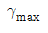
이라 하면 이 탱크의 지름은 얼마인가? (단, 탱크 재료의 탄성계수는 E이고 포아송 비는 ν이다)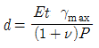
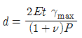
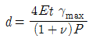
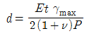
(정답률: 18%)
11. 단순지지보에서 길이는 5m, 중앙에서 집중하중 P가 작용 할때 최대처짐은 몇 cm 인가? (단, 보의 단면(bxh)은 5cmx12cm, 탄성계수 E= 210 GPa, P = 25 kN으로 한다.)
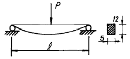
- 8.3
- 4.3
- 2.8
- 6.5
(정답률: 41%)
12. 그림과 같이 정3각형 형태의 트러스가 길이 ℓ 인 두개의 봉으로 조립되어 절점 A에서 수직하중 P를 받고 있다. 이 두봉의 탄성계수는 E, 단면적은 A로 일정하다면 A점 의 수직변위 δ 는?
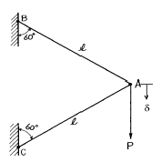
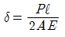
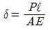
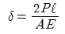
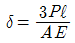
(정답률: 4%)
13. 그림과 같이 노치가 있는 둥근봉이 인장력 P=10 kN을 받고 있다. 노치의 응력 집중계수가 α=2.5 라면, 노치부의 최대응력은 몇 MPa 인가?
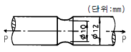
- 3180
- 51
- 221
- 318
(정답률: 40%)
14. 인장강도 400 MPa의 연강봉에, 축방향으로 30 kN의 인장 하중을 줄때 안전율을 5라하면 지름은 약 몇 cm 로 해야하는가?
- 0.22
- 2.99
- 2.19
- 4.37
(정답률: 45%)
15. 그림과 같은 보의 중앙점에서 굽힘모멘트의 크기는?
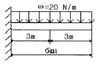
- 30 N · m
- 60 N · m
- 90 N · m
- 120 N · m
(정답률: 36%)
16. 탄성계수 E=200 GPa, 포아송 비 ν =0.3 일 때 전단 탄성계수 G 값은 몇 GPa 인가?
- 66
- 77
- 88
- 99
(정답률: 49%)
17. 그림의 보에서 θA 가 옳게된 것은? (단, EI는 일정하다.)
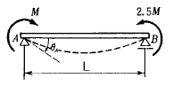
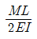
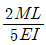
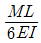
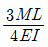
(정답률: 25%)
18. 그림에서 클램프(clamp)의 압축력이 P=5 kN 일 때 m-n으로 잘려진 면의 최소두께 h를 구하면 몇 cm 인가? (단, 직사각형 단면의 폭 b=10mm, 편심거리 e=50mm, 재료의 허용응력 σW=150 MPa이다.)
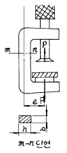
- 1.33 P
- 2.33
- 3.33
- 4.33
(정답률: 14%)
19. 다음 그림과 같이 평면응력 상태에 있는 재료 내부에 생기는 최대 주응력을 σ1, 최소 주응력을 σ2, 전단응력을 τxy 라고 할 때, 성립하는 관계식으로 옳은 것은?
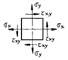
- σ1 - σ2 = σx - σy
- σ1 + σ2 = σx + σy
- σ1 + σ2 = 2τxy
- σ1 - σ2 = τxy
(정답률: 33%)
20. 8cmx12cm인 직사각형 단면의 기둥 길이를 L1, 지름 20cm인 원형 단면의 기둥 길이를 L2 라하고 세장비가 같다면, 두 기둥의 길이의 비 L2/L1은 얼마인가?
- 1.44
- 2.16
- 2.5
- 3.2
(정답률: 10%)
2과목: 기계열역학
21. 해수면 아래 20 m에 있는 수중다이버에게 작용하는 절대 압력은? (단, 대기압은 101 kPa 이고, 해수의 비중은 1.03 이다.)
- 202.9 kPa
- 302.9 kPa
- 101.3 kPa
- 503.4 kPa
(정답률: 41%)
22. 이상기체를 동작물질로 하는 카르노사이클의 p-v 선도는 다음 그림과 같다. 이 그림에서 열을 공급받는 과정은?
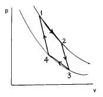
- 1 - 2
- 2 - 3
- 3 - 4
- 4 - 1
(정답률: 20%)
23. 정압과정에서의 전달 열량은?
- 내부에너지 변화량과 같다.
- 이루어진 일량과 같다.
- 체적의 변화량과 같다.
- 엔탈피 변화량과 같다.
(정답률: 34%)
24. 질량이 m1㎏ 이고 온도가 t1℃ 인 금속을 질량이 m2㎏ 이고 온도가 t2℃인 물속에 넣었더니 전체가 균일한 온도t′ ℃로 되었다면, 이 금속의 비열은 얼마인가? (단, 외부와의 열전달은 없고 t1 > t2 이다.)
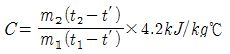
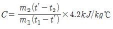
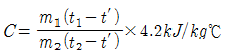
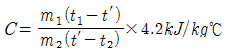
(정답률: 29%)
25. 단열된 용기 안에 두 개의 구리 블럭이 있다. 블록 A는 10 kg, 온도 300 K이고 블록 B는 10 kg, 900 K이다. 구리의 비열은 0.4 kJ/kg℃ 이다. 두 블록을 접촉시켜 열교환이 가능하게 하고 장시간 놓아두어 최종 상태에서 두 구리 블록의 온도가 같아졌다. 이 과정 동안 시스템의 엔트로피 증가량은?
- 1.15 kJ/K
- 2.04 kJ/K
- 2.77 kJ/K
- 4.82 kJ/K
(정답률: 26%)
26. 보일러 입구의 압력이 9800 kN/m2이고, 복수기의 압력이 4900 N/m2일때 펌프일은? (단, 물의 비체적은 0.001 m3/㎏ 이다.)
- -9.795 kJ/㎏
- -15.173 kJ/㎏
- -87.25 kJ/㎏
- -180.52 kJ/㎏
(정답률: 30%)
27. 10℃에서 160℃까지의 공기의 평균 정적비열은 0.7315kJ/ kgㆍ℃이다. 이 온도변화 에서 공기 1 ㎏의 내부에너지 변화는?
- 109.7 kJ
- 120.6 kJ
- 107.1 kJ
- 121.7 kJ
(정답률: 53%)
28. 다음과 같은 이상적인 랭킨 사이클의 열효율은? (단, 온도 - 엔트로피(T - S)선도의 각 상태의 엔탈피 h는 다음과 같다. h1 = 40 ㎉/㎏, h2 = 42 ㎉/㎏, h3 = 334 ㎉/㎏, h4 = 825 ㎉/㎏, h5 = 500 ㎉/㎏ 이다.)
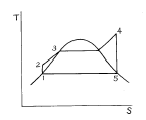
- 약 34 %
- 약 47 %
- 약 39 %
- 약 41 %
(정답률: 40%)
29. 27 kPa의 압력은 수은 주로 어느 정도 높이가 되겠는가?
- 약 157.7mm
- 약 202.6mm
- 약 264.4mm
- 약 557.4mm
(정답률: 50%)
30. 온도가 350 K이고, 비열비 1.4이며 이상기체 상수가 0.287 kJ/kg∙K 인 공기에서 음속은?
- 300m/s
- 325m/s
- 350m/s
- 375m/s
(정답률: 20%)
31. 압력이 일정할 때 공기 5 kg을 0℃에서 100℃까지 가열하는데 필요한 열량(kJ)은? (단, 공기 비열 Cp (kJ/kg℃) = 1.01 + 0.000079t(℃)이다.)
- 102
- 476
- 500
- 507
(정답률: 36%)
32. 2 ㎏의 어느 기체가 절대압력 1 ㎏f/cm2, 온도 25℃에서 체적이 0.5 m3였다면 이 기체의 기체상수 R은 약 얼마 인가?
- 82 J/㎏∙K
- 8.4 J/㎏∙K
- 820J/㎏∙K
- 84 J/㎏∙K
(정답률: 9%)
33. 가역열기관이 1000℃의 열원과 300 K의 대기 사이에 작동한다. 이 열기관이 사이클 당 100 kJ의 일을 할 경우 사이클 당 1000℃의 열원으로부터 받은 열량은?
- 70.0 kJ
- 76.4 kJ
- 130.8 kJ
- 142.9 kJ
(정답률: 16%)
34. 열역학 제 2법칙을 설명한 다음 사항 중 틀린 것은?
- 효율이 100%인 열기관은 얻을 수 없다.
- 제 2종의 영구 기관은 작동 물질의 종류에 따라 가능하다.
- 열은 스스로 저온의 물질에서 고온의 물질로 이동하지 않는다.
- 열기관에서 작동 물질이 일을 하게 하려면 그보다 더 저온인 물질이 필요하다.
(정답률: 30%)
35. 자동차에서 에어컨을 가동할 때 차량 밑으로 물이 떨어졌다. 이 물은 주로 어디서 발생했는가?
- 응축기
- 증발기
- 팽창밸브
- 압축기
(정답률: 12%)
36. 제1종 영구기관을 설명하는 것이 아닌 것은?
- 에너지 소비없이 계속 일을 하는 원동기
- 주위로 일을 계속할 수 있는 원동기
- 열에너지를 모두 계속 일 에너지로만 변환하는 기관
- 외부에서 에너지를 가하지 않은 채 영구히 에너지를 내는 기관
(정답률: 23%)
37. 한여름 낮 주차된 차량의 내부 온도는 외부보다 높은 경우가 많다. 어떤 이유인가?
- 태양으로부터의 복사열로 인해서
- 대류 열전달이 활발히 일어나기 때문에
- 복사에너지가 존재하지 않으므로
- 차량 내부에 자연대류가 생성되어서
(정답률: 30%)
38. 가역사이클에 대한 클라우지우스(Clausius)의 적분은 어느 것이 옳은가? (단, Q = 열량, T = 절대온도이다.)
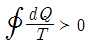
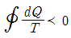
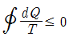
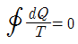
(정답률: 33%)
39. 다음 그림은 물의 압력-온도선도이다. 맞게 표현한 것은?
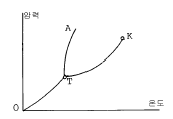
- K는 임계점이고, TA는 융해곡선이다.
- T는 임계점이고, OT는 증발곡선이다.
- K는 임계점이고, TK는 승화곡선이다.
- T는 임계점이고, OT는 승화곡선이다.
(정답률: 10%)
40. 고온 400℃, 저온 50℃의 온도 범위에서 작동하는 Carnot 사이클의 열효율을 구하면 몇 ％인가?
- 22
- 32
- 42
- 52
(정답률: 35%)
3과목: 기계유체역학
41. 일정한 직경의 파이프로 100 m 높이에 있는 저수지 물을 지상으로 공급하고자 한다. 지상으로 내려오면서 파이프 내의 유속 변화에 대한 설명 중 맞는 것은? (단, 물은 비압축성 유체로 생각한다.)
- 속도가 증가한다.
- 속도가 일정하다.
- 속도가 감소한다.
- 속도가 증가하다가 일정속도에 도달한다.
(정답률: 20%)
42. 바람에 수직하게 놓인 지름 40 cm의 원판(disk)이 받는 항력이 0.4 N이었다. 공기 밀도가 1.2 kg/m3이고 항력계 수가 1.1이라면 풍속은 몇 m/s인가?
- 0.8
- 1.1
- 1.6
- 2.2
(정답률: 27%)
43. 다음 중 유선(streamline)을 가장 잘 설명한 것은?
- 에너지가 같은 점을 이은 선이다.
- 유체 입자가 시간에 따라 움직인 궤적이다.
- 유체 입자의 속도벡터와 접선이 되는 가상 곡선이다.
- 정상유동 때의 유동을 나타내는 곡선이다.
(정답률: 48%)
44. 위가 열린 큰 탱크(tank) 속에 비중량이
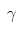
인 액체가 들어있다. 이 액체의 자유 표면에서 h되는 위치에 있는 단면적 A인 노즐(nozzle)을 통하여 액체가 대기중으로 분출될 때 탱크가 받는 추력(thrust)은? (단, 유량계수는 1 이다.)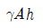
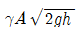
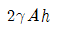
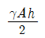
(정답률: 18%)
45. 속도포텐셜 φ = x2-y2 인 2차원 정상 유동에 대하여 점(3,4) 에서 유체의 속력(speed)은?
- 5
- 7
- 7.07
- 10
(정답률: 34%)
46. 물이 직경(D) 1.5 cm의 거친 관을 평균속도 0.125 m/s로 흐른다. 원관의 조도 e는 0.01 mm이며, 물의 동점성계수는 1.5x10-6m2/s이다. 다음 중 관마찰계수 f의 함수표현으로 맞는 것은?
- f= f(Re)
- f= f(Re, e/D)
- f= f(e/D)
- f= f(△P, e/D)
(정답률: 31%)
47. 20 m 높이로 올릴 수 있는 분수를 만들고자 한다. 지름이 50 mm인 노즐로 수직으로 분사할 때 공급해야할 유량은 몇 m3/s 인가? (단, 각종 손실은 무시하며, 물의 밀도는 1000 kg/m3, 중력가속도는 9.81 m/s2이다.)
- 0.025
- 0.030
- 0.039
- 0.045
(정답률: 30%)
48. 부차적 손실계수 값이 5인 밸브를 Darcy의 관마찰계수가 0.025이고 지름이 2 cm인 관으로 환산한다면 관의 등가 길이는 몇 m인가?
- 4
- 0.4
- 2.5
- 0.25
(정답률: 45%)
49. 체적이 0.1m3인 타이어 속의 공기는 온도가 30℃이고 계기압력은 175 kPa이다. 타이어속에 있는 공기의 질량은 몇 kg인가? (단, 대기압은 표준대기압이고, 공기의 기체상수는 287J/kg · K이다.)
- 0.32
- 3.1
- 0.63
- 6.2
(정답률: 36%)
50. 그림과 같은 관에 유리관 A,B를 세우고 물을 흐르게 했을때 유리관 B의 상승높이 h2는 약 몇 cm인가?
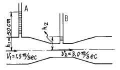
- 34.4
- 10
- 15.56
- 12.5
(정답률: 23%)
51. 구형 물체 주위의 비압축성 점성유체의 흐름에서 유속이 대단히 느릴 때(레이놀즈수가 1보다 적을 경우) 구형 물체에 작용하는 항력 Dr은? (단, 구의 지름은 d, 유체의 점성계수를 μ, 유체의 평균 속도를 V라 한다.)
- Dr=3πμ d V
- Dr=6πμ d V
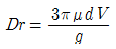
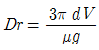
(정답률: 30%)
52. 그림에서 압력차(Px-Py)는 몇 kPa 인가?
- 25.67
- 0.262
- 0.2567
- 2620
(정답률: 15%)
53. 동점성계수가 0.1x10-5m2/s인 유체가 안지름 10 cm인 원관내에 1 m/s로 흐르고 있다. 관마찰계수가 f=0.022이며 등가길이가 200 m 일 때의 손실수두는 몇 m 인가? (단, 비중량은  =9800 N/m3이다.)
=9800 N/m3이다.)
- 2.24
- 22.0
- 11.0
- 6.58
(정답률: 19%)
54. 그림과 같이 유체속에 수직으로 잠겨진 직사각형 판에서 힘의 작용점의 위치는 판의 중심(C)보다 수직으로 몇 m아래에 있는가?
- 0.32 m
- 0.257 m
- 1.2 m
- 0.463 m
(정답률: 27%)
55. 뉴턴유체 유동의 한 점에서 전단응력이 300 N/m2이고, 속도구배가 6000(m/s)/m이다. 만일 액체의 비중이 0.95라면 동점성계수는 몇 스토크스(stokes)인가?
- 5.26x10-1
- 5.26x10-2
- 5.26x10-5
- 5.26x10-10
(정답률: 20%)
56. 높이 1.5 m의 자동차가 108 km/hr의 속도로 주행할 때의 공기흐름 상태를 높이 1 m의 모형을 사용해서 풍동 실험 할때, 상사법칙을 만족시키기 위한 풍동의 공기 속도는 몇 m/s인가?
- 20
- 30
- 45
- 67
(정답률: 24%)
57. 안지름이 100 mm인 관속을 동점성계수가 1x10-4m2/s인 기름이 평균유속 1.5 m/s로 흐르고 있다. 이때의 관마찰계수는?
- 0.022
- 0.043
- 45.45
- 24.44
(정답률: 43%)
58. 만약 액체가 강체처럼 수직축 둘레를 일정한 각속도로 회전하면 바닥면에서의 압력은?
- 반지름방향 거리의 제곱에 따라 감소한다.
- 반지름방향 거리에 따라 직선적으로 증가한다.
- 반지름방향 거리에 따라 직선적으로 감소한다.
- 반지름방향 거리의 제곱에 따라 증가한다.
(정답률: 20%)
59. 실제 잠수함 크기의 1/25 인 모형 잠수함을 해수에서 실험하고자 한다. 만일 실형 잠수함을 5 m/s로 운전하고자 할 때 모형 잠수함의 속도는 몇 m/s로 실험해야 하는가?
- 3.3
- 54
- 100
- 125
(정답률: 40%)
60. 안지름 D인 베어링에 지름 d인 축을 끼우고 그 틈을 점도 μ인 기름으로 윤활하고 있다. 이 축을 각속도 ω로 회전시킬 때 축의 단위 길이에 대한 소비 동력은?
(정답률: 5%)
4과목: 기계재료 및 유압기기
61. 주철(Fe-C계)에 규소(Si)가 첨가되면 어떠한 영향을 미치는가?
- 흑연화촉진, 흑연,오스테나이트 공정 평형온도저하
- 시멘타이트화 촉진, 공정온도 저하, 공정탄소량 증가
- 흑연화촉진, 흑연,오스테나이트 공정 평형온도 상승, 공정탄소량 감소
- 시멘타이트화 촉진, 흑연, 오스테나이트 공정 평형온도 상승, 공정탄소량 증가
(정답률: 48%)
62. 일정한 유량의 기름이 흐르는 관의 직경이 배로 늘었다면 기름의 속도는 몇배로 되는가?
- 1/4배
- 1/2배
- 2배
- 4배
(정답률: 60%)
63. 다음 중 채터링 현상에 대한 설명으로 가장 적합한 것은?
- 유량제어밸브의 개폐가 연속적으로 반복되어 심한 진동에 의한 밸브 포트에서의 누설 현상
- 유동하고 있는 액체의 압력이 국부적으로 저하되어 증기나 함유 기체를 포함하는 기체가 발생하는 현상
- 감압밸브, 체크밸브, 릴리프밸브 등에서 밸브시트를 두드려 비교적 높은 소음을 내는 자려 진동 현상
- 슬라이드 밸브 등에서 밸브가 중립점에서 조금 변위하여 포트가 열릴 때, 발생하는 압력증가 현상
(정답률: 70%)
64. 하부 Bainite 조직과 유사한 침상조직은?
- Ferrite
- Osmondite
- Sorbite
- Martensite
(정답률: 44%)
65. 탄소강의 분류와 용도에서 기어, 캠등에 사용되는 가장 적당한 것은?
- 극연강
- 탄소공구강
- 반연강
- 표면경화용강
(정답률: 19%)
66. 철의 조직 중에서 인장강도와 내마모성이 동시에 우수한 특성을 나타내는 조직으로 가장적합 한 것은?
- 펄라이트(Pearlite)
- 페라이트(Ferrite)
- 시멘타이트(Cementite)
- 오스테나이트(Austenite)
(정답률: 44%)
67. 보기와 같은 유압 기호가 나타내는 명칭은?
- 리밋 스위치
- 전자 변환기
- 압력 스위치
- 아날로그 변환기
(정답률: 50%)
68. 보기와 같은 회로의 명칭으로 다음 중 가장 적합한 것은?
- 체크 밸브에 의한 로크 회로
- 일정 토크 구동 회로
- 일정 마력 구동 회로
- 완전 로크 회로
(정답률: 45%)
69. 유압회로 내 이물질을 제거하는 것과 작동유 교환시 오래된 오일과 슬러지를 용해하여 오염물의 전량을 회로 밖으로 배출시켜서 회로를 깨끗하게 하는 것은?
- 플래싱(flushing)
- 드레인(drain)
- 패킹(packing)
- 매니폴드(manifold)
(정답률: 57%)
70. 탄소강을 담금질할 때 재료의 내부와 외부에 담금질 효과가 서로 다르게 나타나는 현상을 무엇이라고 하는가?
- 노치효과
- 담금질효과
- 질량효과
- 비중효과
(정답률: 64%)
71. 유압 작동유에 공기가 많이 흡입된 경우의 초래되는 현상으로 틀린 것은 ?
- 압축성이 증대되어 유압기기의 작동이 불규칙하다.
- 유압펌프에서 캐비테이션 발생의 원인이 된다.
- 산화촉진을 막아 준다.
- 윤활작용이 저하된다.
(정답률: 75%)
72. 다음 중 비용적형 펌프에 해당되는 것은?
- 원심 펌프
- 기어 펌프
- 나사 펌프
- 베인 펌프
(정답률: 65%)
73. 탄소강에서 인(P)의 영향으로 맞는 것은?
- 냉간가공시 균열이 생기기 쉽다.
- 연신율, 충격치를 증가시킨다.
- 적열취성을 일으킨다.
- 강도, 경도를 감소시킨다.
(정답률: 43%)
74. 베인모터의 장점 설명으로 틀린 것은?
- 베어링 하중이 작다.
- 정, 역회전이 가능하다.
- 토크 변동이 비교적 작다.
- 기동시나 저속 운전시의 효율이 높다.
(정답률: 48%)
75. 흑연이 미세하고 균일하게 분포되어 있으며, 내마멸성이 요구되는 공작기계의 안내면과 강도를 요하는 기관의 실린더등에 쓰이는 고급 주철은?
- 칠드주철
- 고합금주철
- 미해나이트 주철
- 구상흑연주철
(정답률: 29%)
76. 산화알루미나(Al2O3)를 주성분으로 하며 철과 친화력이 없고, 열을 흡수하지 않으므로 공구를 과열시키지 않아 고속 정밀가공에 적합한 공구의 재질은?
- 세라믹
- 인코넬
- WC계 초경합금
- TiC계 초경합금
(정답률: 78%)
77. 특수강은 대개 탄소강에 비하여 가공하기 힘든 결점이 있다. 그 원인이 아닌 것은?
- 특수원소가 만드는 탄화물 때문에 고온에서도 단단하다.
- 복잡한 조직으로 인해 전위의 이동이 용이하지 않다.
- 열전도율이 높으므로 가열시 온도가 균일하게 된다.
- 표면 산화막이 잘 떨어지지 않는다.
(정답률: 63%)
78. 가단주철이란 어떠한 것인가?
- Ce, Mg의 접종에 의해 흑연을 구상화 시킨 것
- 기지 조직을 펄라이트로 하고 용해에 의해 흑연을 미세화 한 것
- Fe-Si, Ca-Si의 접종에 의해 흑연을 균일 미세화시킨 것
- 고탄소 주철로써 열처리에 의해 강인화하여 단조가능한 것
(정답률: 40%)
79. 다음 중 방향제어밸브에 속하는 것은?
- 릴리프 밸브(Relief valve)
- 시퀀스 밸브(Sequence valve)
- 체크 밸브(Check valve)
- 교축 밸브(Restricting valve)
(정답률: 66%)
80. 유압시스템에서 작동유의 과열 원인이 아닌 것은?
- 작동유의 점성이 낮은 경우
- 작동유의 점성이 높은 경우
- 작동 압력이 높은 경우
- 유량이 많은 경우
(정답률: 37%)
5과목: 기계제작법 및 기계동력학
81. 힘을 받지 않은 상태의 길이가 1.2 m 인 스프링이 1.2m에서 1.6 m 로 늘리는데 스프링에 가해준 일의 양은? (단, 스프링 상수는 400 N/m 이다. )
- 32 J
- 126 J
- 288 J
- 512 J
(정답률: 33%)
82. 연삭숫돌의 3요소에 해당되지 않는 것은?
- 연삭입자
- 결합제
- 기공
- 조직
(정답률: 24%)
83. 판재굽힘가공에서 굽힘각(도) α , 굽힘반지름 R, 재료두께 T, T에 대한 굽힘내면에서 중립축까지의 거리와의 비(상수)를 k라면 굽힘량(중립축 위의 원호길이) A를 구하는 식으로 옳은 것은?
- A = (2π∙α /180) (R+kT)
- A = (2π∙α /360) (R+kT)
- A = (360/2π∙α ) (R+kT)
- A = (180/2π∙α ) (R+kT)
(정답률: 19%)
84. 산소 아세틸렌가스 용접에서 프랑스식 팁 100번의 1시간당 아세틸렌 소비량은 몇 리터 인가?
- 50
- 100
- 150
- 200
(정답률: 71%)
85. 직립식 밀링머신(vertical milling machine)에는 어떤 공구가 사용되는가?
- 플레인 커터 (plain cutter)
- 메탈 소 (metal saw)
- 총형 커터 (formed cutter)
- 엔드 밀 (end mill)
(정답률: 39%)
86. 높은 용융점의 금속에 가장 부적당한 주조방법은?
- 인베스트먼트 주조법
- 사형 주조법
- 다이캐스팅법
- 원심 주조법
(정답률: 18%)
87. 영구주형(비소비성주형)과 비영구주형(소비성주형)을 다같이 사용하는 주조법은?
- 원심주조법
- 셸모울딩법
- 인베스트먼트법
- 다이캐스팅법
(정답률: 21%)
88. 72 km/h의 속력으로 경사면을 올라가던 자동차가 위치 1에서 브레이크를 밟아 제동하였으며 이때 바퀴 4개는 모두 회전하지 않고 미끄러진다. 정지거리 x는 몇 m 인가? (단, 타이어와 노면의 동마찰계수는 0.6 이다.)
- 20
- 23
- 25
- 27
(정답률: 14%)
89. 감쇠 비율이 0.0681인 감쇠자유진동의 서로 이웃하고 있는 2개 사이클의 진폭비는?
- 0.429
- 1.54
- 4.29
- 15.4
(정답률: 15%)
90. 그림과 같이 질량 M인 기계시스템 안에 질량 m인 부품이 각속도 ω로 회전하고 있다. 이 시스템의 진동응답에 대한 설명 중 맞는 것은?
- 회전 각속도 ω가
 보다 크면 기계의 진동진폭이 커진다.
보다 크면 기계의 진동진폭이 커진다. - 회전 각속도 ω가
 와 같아지면 기계의 진동진폭이 커진다.
와 같아지면 기계의 진동진폭이 커진다. - 회전 각속도 ω가
 보다 작아지면 기계의 진동 진폭이 커진다.
보다 작아지면 기계의 진동 진폭이 커진다. - 회전 각속도는 기계의 진동 진폭과 상관이 없다.
(정답률: 10%)
91. U형 시험관(U-tube)내에 들어있는 유체의 운동은 조화 운동으로 나타낼수 있다. 시험관내에 유체가 차지하는 길이를 L이라 하면 운동의 주기는?
(정답률: 40%)
92. 공이 수직 상방향으로 9.81 m/s의 속도로 던져졌을 때 최대 도달 높이는 몇 m 인가?
- 4.91
- 9.81
- 14.72
- 19.62
(정답률: 27%)
93. 5sinωt N의 가진력이 변위 에 작용할 때 1사이클당 일은 몇 N-mm 인가?
- 11.8
- 23.6
- 35.4
- 47.2
(정답률: 15%)
94. 압출가공(extrusion)에 관한 설명으로 틀린 것은?
- 압출가공과정의 근본적인 방식으로는 직접(전방)압출 과 간접(후방)압출이 있다.
- 직접압출보다 간접압출에서 마찰력이 적다.
- 직접압출보다 간접압출에서 소요동력이 적게 든다.
- 직접압출보다 간접압출에서 압출종료시 콘테이너에 남는 소재량이 많게 된다.
(정답률: 36%)
95. 두 질점의 완전소성충돌에 대한 설명 중 틀린 것은?
- 반발계수가 영이다.
- 두 질점의 전체에너지가 보존된다.
- 두 질점의 전체운동량이 보존된다.
- 충돌 후, 두 질점의 속도는 서로 같다.
(정답률: 40%)
96. 그림과 같이 삼침을 이용하여 미터나사의 유효지름(d2)를구하고자 한다. 올바른 식은? (단, P : 나사의 피치, d : 삼침의 지름, M : 삼침을 넣고 마이크로미터로 측정한 치수)
- d2=M+d+0.86603P
- d2=M-d+0.86603P
- d2=M-2d+0.86603P
- d2=M-3d+0.86603P
(정답률: 58%)
97. 선형적인 특성을 갖는 점성감쇠기의 한 끝점 A를 고정시키고 다른 끝점 B에 여러가지 작용을 주었다. 옳은 설명은?
- 감쇠기에는 B점의 이동거리에 비례하는 저항력이 발생한다.
- 감쇠기에는 B점의 속력의 제곱에 비례하는 저항력이 발생한다.
- 감쇠기에는 B점의 가속도의 크기에 비례하는 저항력이 발생한다.
- B점에 정적인 힘을 가하면 감쇠기에는 저항력이 발생하지 않는다.
(정답률: 9%)
98. 무게 W인 망치를 사용해서 못을 수직으로 박고 있다. 망치가 못을 때리는 순간의 속도는 V이다. 못이 박힌 거리를 S라 할 때 평균저항력은 얼마인가? (단, 못이 박히는 동안 망치와 못은 서로 접촉상태를 유지한다고 가정한다)
(정답률: 20%)
99. 절삭제의 사용에 대한 설명 중 틀린 것은?
- 공구와 공작물의 온도를 냉각시키기 위해
- 공구와 공작물간의 마찰력을 줄이기 위해
- 칩의 처리를 위하여
- 저속절삭에서는 낮은 점도의 것을, 고속절삭에서는 높은 점도의 것을 사용하기 위하여
(정답률: 57%)
100. 자동차 크랭크축, 스핀들, 펌프축, 기어 등의 표면경화법으로 가장 좋은 것은?
- 침탄법
- 질화법
- 전기경화법
- 고주파경화법
(정답률: 28%)